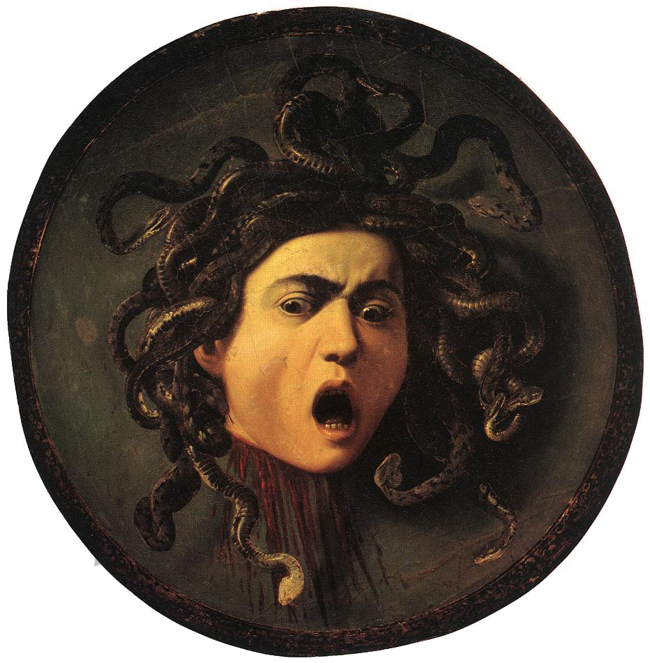
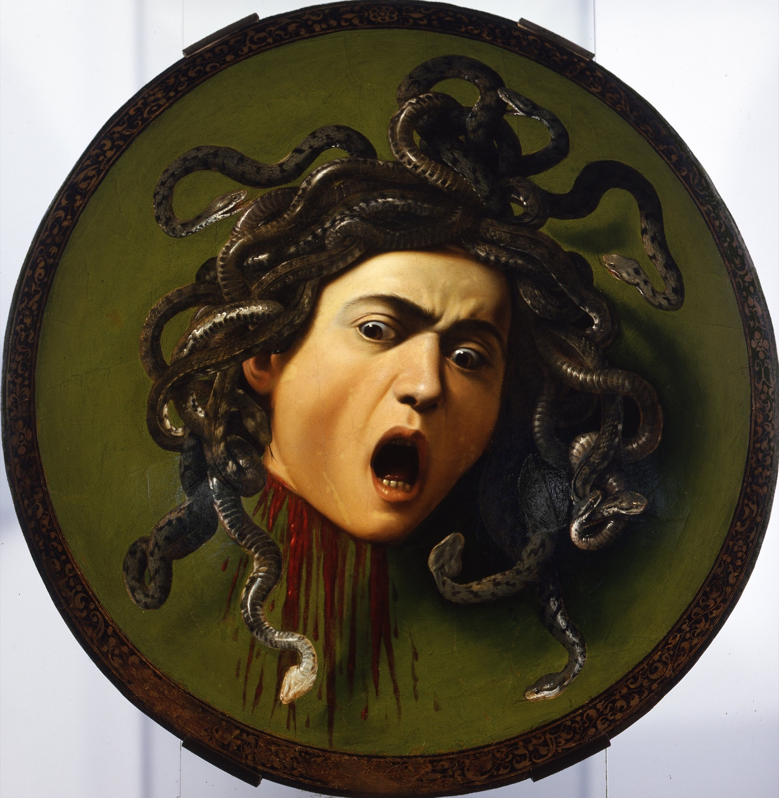
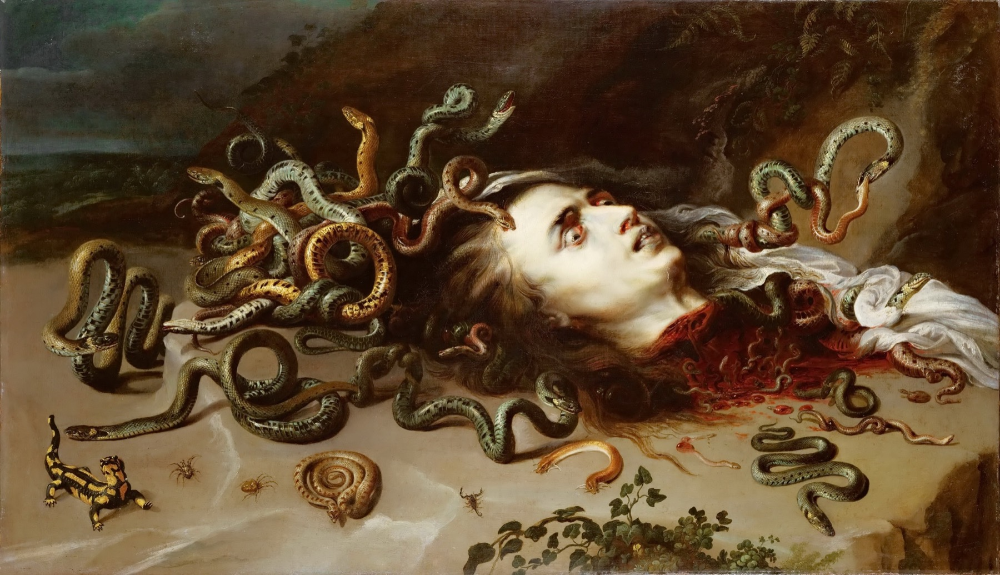
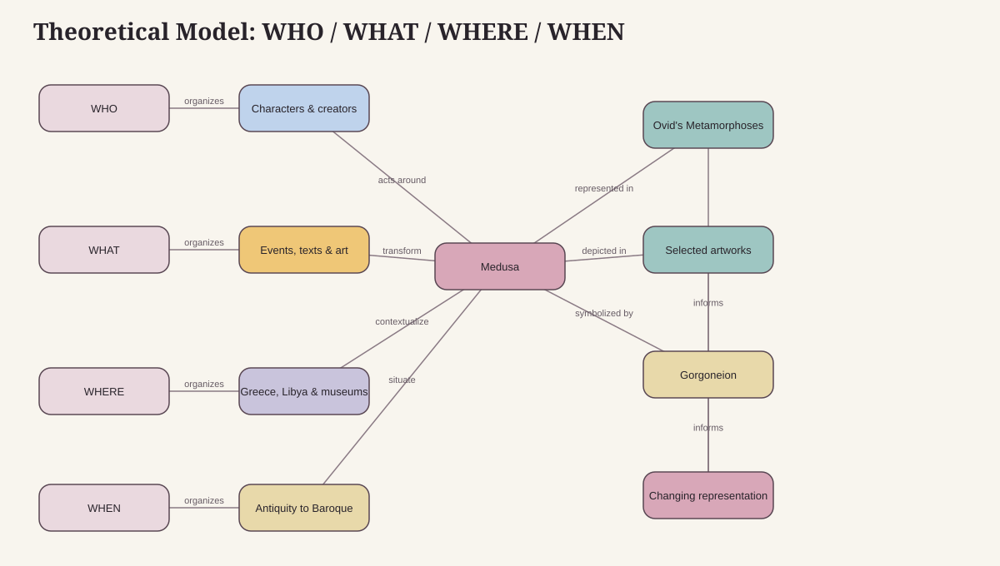
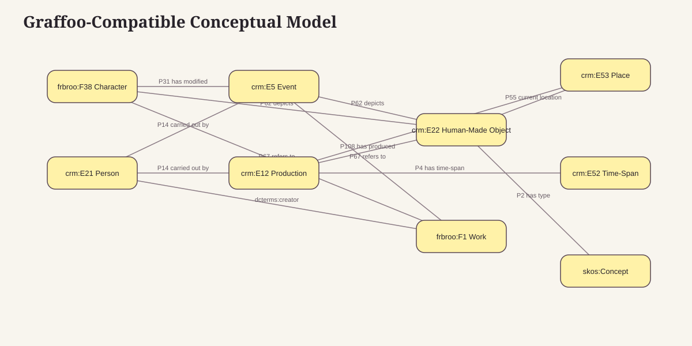
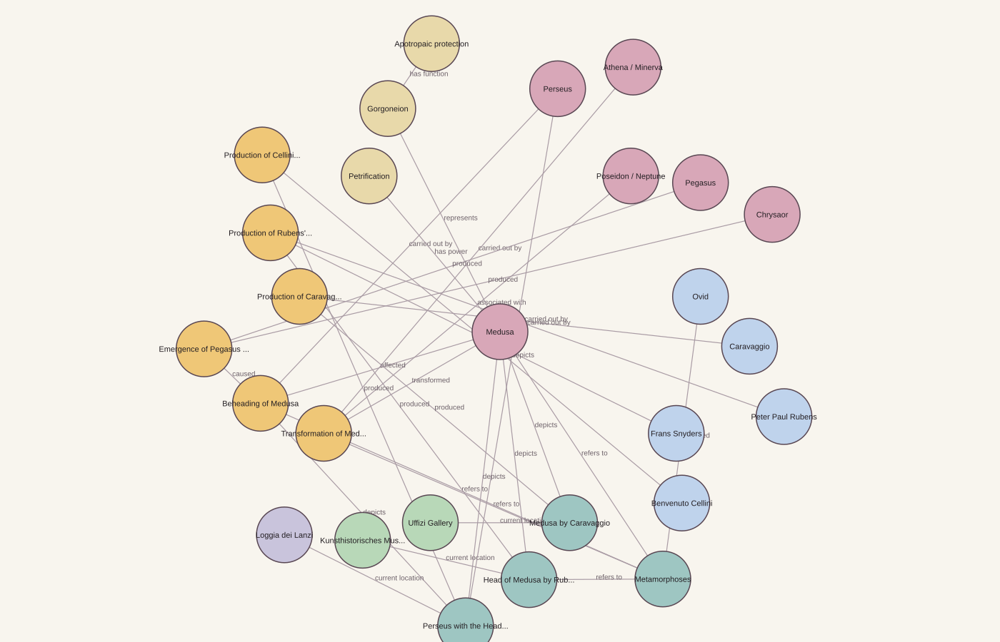

Literary source
Ovid, Metamorphoses
Book IV frames Medusa as once beautiful, recounts her transformation, and connects her death to Pegasus and Chrysaor.
Information Science and Cultural Heritage · University of Bologna
A Linked Open Data investigation connecting myth, Ovidian literature, museum objects, and changing visual meanings.
Research question
How is Medusa represented across literary and artistic sources?

01 · Study of the domain
Medusa moves between categories: mortal Gorgon, transformed woman, defeated monster, powerful severed head, protective emblem, and recurring artistic subject. The corpus connects a focused Wikipedia edition with Ovid's Metamorphoses and museum records.
Literary source
Book IV frames Medusa as once beautiful, recounts her transformation, and connects her death to Pegasus and Chrysaor.
Painted shield · ca. 1597
The severed head faces the viewer from a shield, collapsing Medusa, mirror, weapon, and self-portrait.
Painting · ca. 1613
The aftermath becomes a vivid study of death, snakes, and allegorical victory, explicitly linked by the museum to Ovid.
Bronze sculpture · 1545-1554
The Florentine monument emphasizes Perseus's triumph while placing Medusa's body and head at the center of political space.


02 · Knowledge organization
The theoretical model organizes the subject through WHO, WHAT, WHERE, and WHEN. The conceptual model refactors those natural-language relationships through CIDOC-CRM, FRBRoo, SKOS, Dublin Core Terms, and OWL.


03 · Knowledge representation
The TEI document contains the annotated corpus and a stand-off register of people, places, organizations, works, objects, events, and relationships. Repeatable transformations generate readable HTML and RDF/Turtle.
<p>The hero <persName ref="#perseus">Perseus</persName> killed <persName ref="#medusa">Medusa</persName> while looking at her reflection in a polished shield.</p>Open TEI reading view
event:beheading a crm:E5_Event ; crm:P14_carried_out_by person:perseus ; crm:P31_has_modified person:medusa .Open Turtle dataset
04 · Exploration
Texts and artworks do not merely mention Medusa. They select different events, attributes, and meanings. Explore the graph to follow those choices across creators, sources, and objects.

Interactive graph
Select Medusa, an event, a text, or an artwork to isolate its immediate connections and open its authority record.
Explore knowledge graph05 · Documentation and files
Every source and derived artifact is available below. Documentation explains selection, authority reconciliation, ontology choices, and the transformation workflow.
Annotated corpus and structured registers.
Readable transformed edition.
CIDOC-CRM and FRBRoo dataset.
Descriptions and authority links.
Evidence-based relationship table.
TEI-to-HTML transformation.
Deterministic Turtle generator.
Classes, properties, and decisions.
Corpus and entity-selection process.
Corpus, museums, and authorities.
Knowledge graph source.
Portable diagram source.
Image used in the museum-style artwork card.
Image used in the museum-style artwork card.
Image used in the museum-style artwork card.
Project overview and rebuild commands.
Homepage · CSS · JavaScript · Caravaggio artwork image · Rubens artwork image · Cellini artwork image · Entities CSV · Relations CSV · Methodology · Ontology · Sources · Theoretical DOT · Theoretical SVG · Conceptual DOT · Conceptual SVG · Graph DOT · Graph SVG · Interactive graph · Mermaid · TEI HTML · RDF/Turtle · XSLT · TEI-to-RDF Python · Graph builder · TEI XML · README.
{kind=link}
{kind=link}
{kind=link}
{kind=link}
{kind=link}
{kind=link}